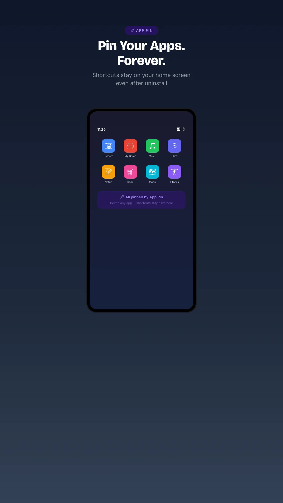
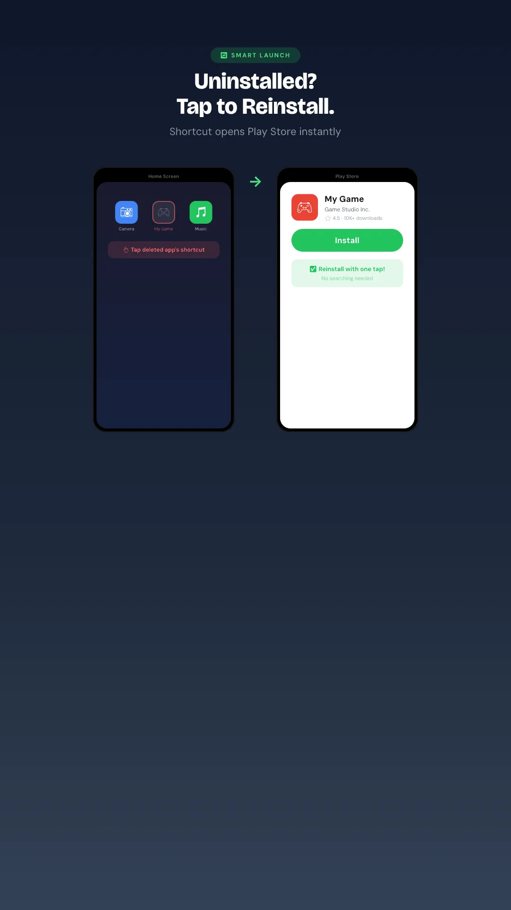
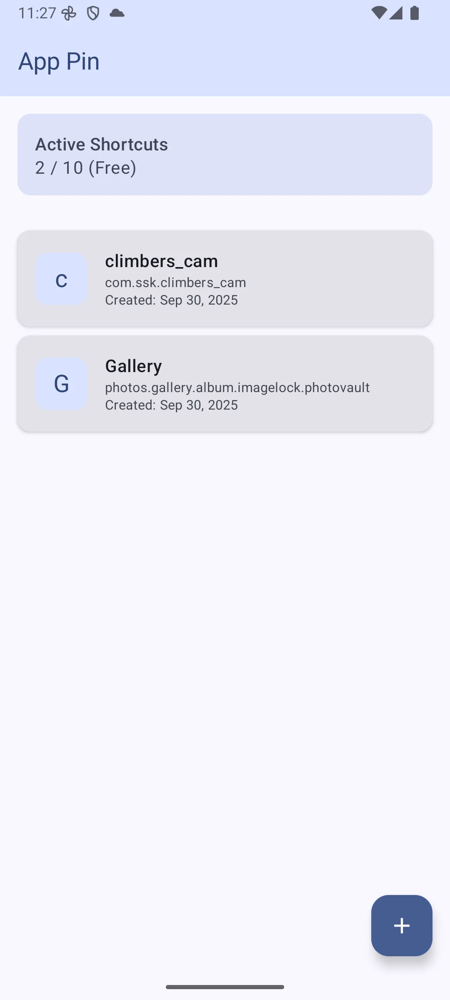
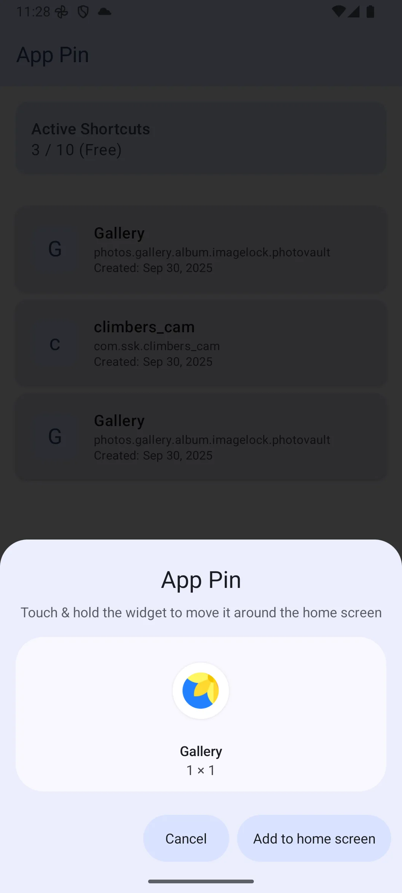

App Pin
Pin apps to your home screen. Shortcuts stay forever — even after uninstall.
Features
Permanent shortcuts
Pin any app to the home screen. The shortcut stays in place even after you uninstall the app.
Smart launch
Tap a shortcut: if the app is installed, it opens. If not, Play Store opens to reinstall it instantly.
Original icon
Shortcuts use the real app icon, so your home screen layout stays clean and recognizable.
Auto cleanup
Detects package removals in the background and keeps your dashboard tidy automatically.
Manage in one place
Dashboard for every pinned app — re-pin, rename, view info, or remove from a single screen.
Material You
Built with Jetpack Compose and Material 3. Lightweight, offline, no account required.
Screenshots




Requirements
- Android 8.0 or later
- A launcher that supports pinned shortcuts (most stock and third-party launchers do)
- Free tier: up to 10 pinned shortcuts